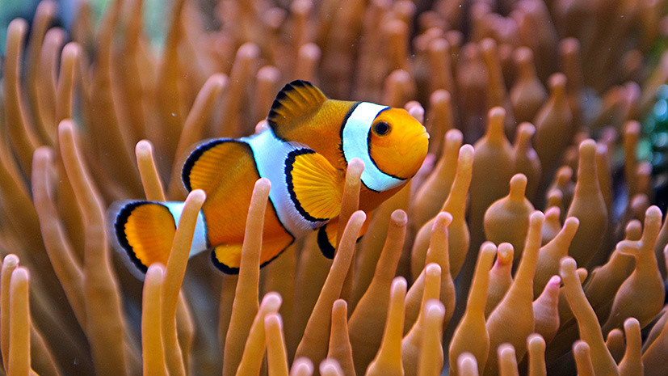
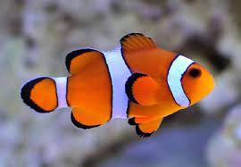

Рыбы-клоуны, или амфиприоны[1] (лат. Amphiprion), — род морских лучепёрых рыб из семейства помацентровых. Чаще всего под этим названием фигурирует аквариумная рыбка оранжевый амфиприон (Amphiprion percula). Для рыб-клоунов характерен симбиоз с различными видами актиний. Вначале рыба слегка касается актинии, позволяя ей ужалить себя и выясняя точный состав слизи, которым покрыта актиния, — эта слизь нужна актинии, чтобы она не жалила сама себя. Затем рыба-клоун воспроизводит этот состав и после этого может прятаться от врагов среди щупалец актинии. Рыба-клоун заботится об актинии — вентилирует воду и уносит непереваренные остатки пищи. Рыбки никогда не удаляются далеко от «своей» актинии. Самцы прогоняют от неё самцов, самки — самок. Территориальное поведение, видимо, стало причиной контрастной окраски. Протандрические гермафродиты: все молодые особи — самцы, однако в течение жизни рыба меняет пол. Стимул, запускающий смену пола, — гибель самки. Окраска рыб варьирует от насыщенно пурпурного до огненно-оранжевого, красного и жёлтого. 28 видов обитают в рифах Индийского и Тихого океанов — от Восточной Африки до Французской Полинезии и от Японии до Восточной Австралии
Научная классификация Домен: Эукариоты Царство: Животные Тип: Хордовые Класс: Лучепёрые рыбы Семейство: Помацентровые Род: Рыбы-клоуны
(Переходите на Рыбы 8
 